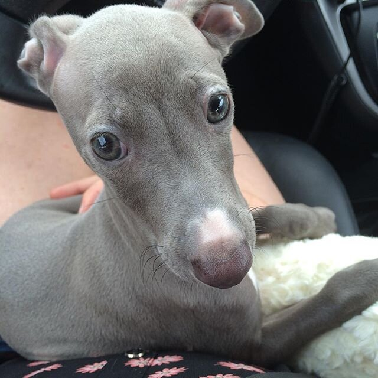
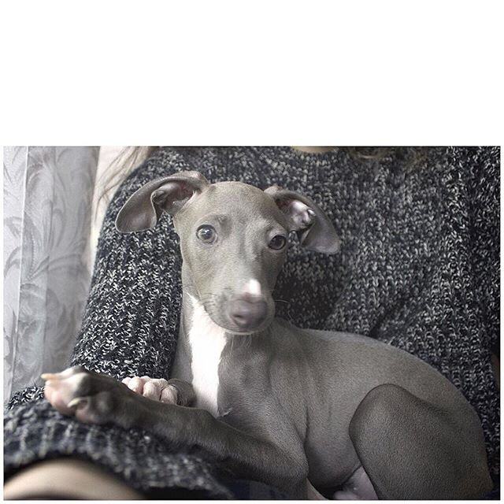

New Puppy, Moving, & More


Heyyyy so um yeah. Lots of stuff has been going on.
First off, I got my puppy!!!!!! He is the sweetest thing and I love him so much. He pees everywhere, can't handle being alone, and chews on rocks, but he's just so dang cute. He's really a handful though and I either have to keep an eye on him 100% or have him in my arms. I feel pretty unproductive this week since I'm just caring for him. I feel like I've brought home a human baby XD like, did I have a child. His name is Pesto :) but he's received many nicknames within the last week of having him - Pedro, Basil, and Dill. I'm sure the list will grow :p He's just a little baby 10 week old Italian Greyhound right now. I have been wanting this breed for over a year now. I think it's so important that a dog's personality matches yours and yeah, he's perfect. He's high strung, scared of almost everything, always cold and wanting a hug, and just loves to sleep with a bunch of blankets. He's goofy and yeah. I'm excited to have Pesto on this life journey with me from here on. With my business growing, it's just going to be me and him in the house together for so many hours. :)
Speaking of being alone in the house... I'm moving to Washington state. I don't really want to focus on this much, and I wasn't even going to mention it to anyone, really, but I'm going through the end of a 5.5 year relationship. I just want to skim over that, because it's still very hard for me to dwell on, but Washington is going to be so good for me... I am just so drawn to the adventure, activity, and change. I really need this and feel like I'm going to grow so much from it. I will move in about 2 months with Pesto and um yeah. The drive literally across the country (Georgia to Washington) is going to suck haha - it'll be 4-5 days of driving. Hmmmm, that's about all. Just letting you know. If I seem kind of detached or distant... that's why. So much is happening. I'm sad, eager, overwhelmed, all at once. Currently moving into my mom's house for a few months before I move to Washington. So that's what's happening.
Love ya'll. I'll get back into the swing of everything very soon, I promise.